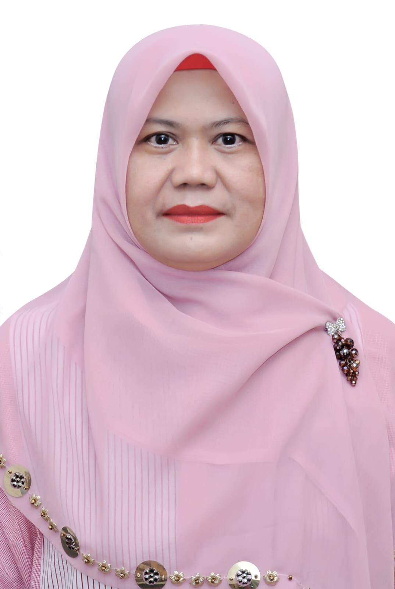
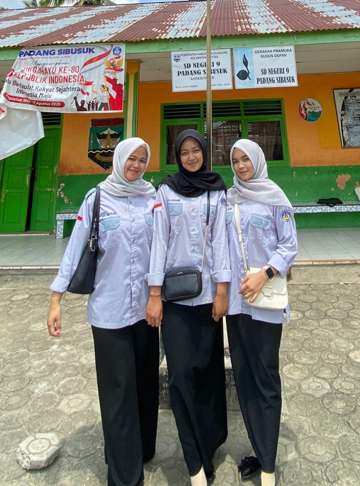
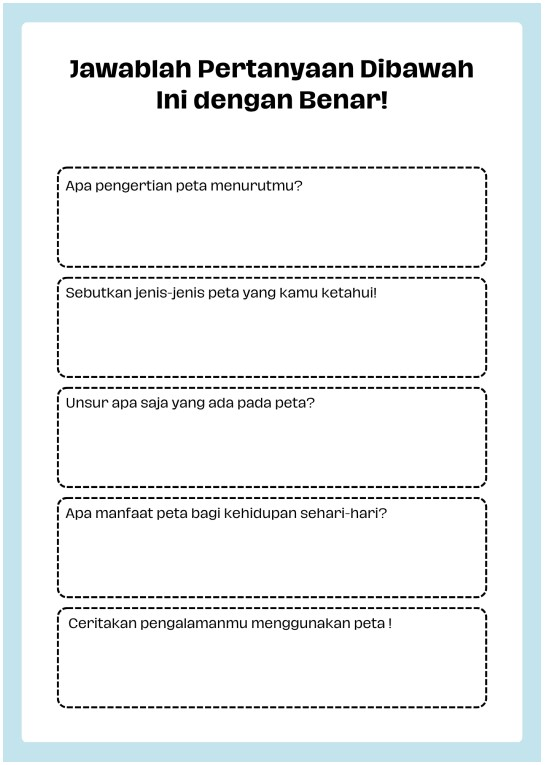
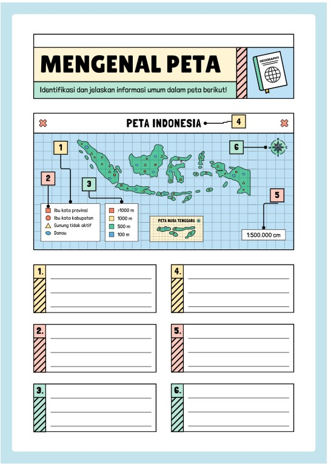
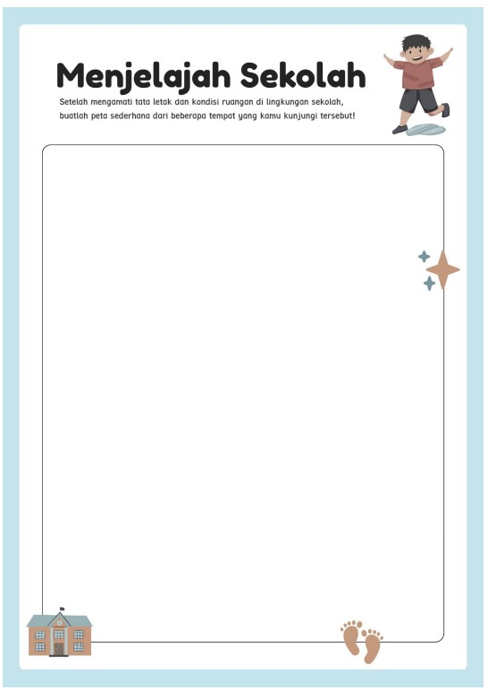
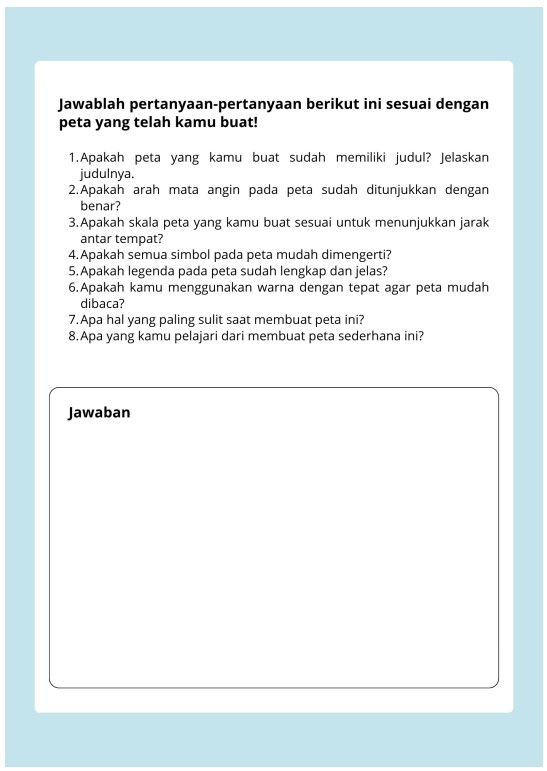

Dosen Pengampu

Dr. Yeni Erita, M.Pd
Kelompok 5

Nur Azizah 23354015
Silvia Anggraini 23354025
Wita Anggelina 23354030
Tugas • MataKuliah
Inovasi Pembelajaran IPS SD Berbasis Digital
Ilmu Pengetahuan Alam & Sosial
Disini Tempat Tinggalku (PETA)
-
PETA
-
Peta Adalah Gambaran permukaan bumi pada bidang datar yang diperkecil dengan menggunakan skala tertentu. Peta menunjukkan letak suatu tempat, jarak antar tempat, Serta arah mata angin.
- Peta indonesia menunjukkan letak provinsi dan pulau.
- Peta lingkungan sekolah menunjukkan posisi ruang kelas, lapangan dan kantin
Dengan Peta kita dapat mengetahui posisi rumah, sekolah, gunung, sungai, jalan, dan tempat penting lainnya.
Contohnya -
Jenis-Jenis Peta
Berdasarkan Isinya:- Peta Umum
- Menunjukkan kenampakan umum seperti gunung, sungai, laut, kota.
- Contohnya: Peta indonesia, Peta provinsi, peta dunia
- Peta Khusus
- Menunjukkan Informasi tertentu sesuai tema.
- Contohnya: Peta jalur transportasi, peta curah hujan, peta kepadatan penduduk.
- Peta Datar (Peta konvensional)
- Digambarkan diatas kertas atau bidang dua dimensi.
- Paling sering digunakan disekolah.
- Peta Timbul
- Menunjukkan bentuk permukaan bumi secara tiga dimensi (tinggi dan rendah).
- Biasanya terbuat dari tanah liat, gips, atau bahan lunak lainnya.
- Peta Digital
- Dapat dilihat melalui komputer, tablet, ponsel
- Contohnya: Google Maps, atau aplikasi peta lainnya.
- Judul Peta
- Skala Peta
- Simbol Peta
- Legenda Peta
- Tata Warna peta
- Arah Mata Angin
- Menunjukkan suau lokasi tempat dengan jelas.
- Mengetahui arah dan jarak suatu tempat
- Menjadi panduan dalam perjalanan atau kegiatan luar ruangan.
- Membantu mengenal kenampakan alam dan wilayah indonesia
- Menumbuhkan rasa cinta terhadap lingkungan dan daerah tempat tinggal.
- Bacalah judul peta untuk mengetahui isi peta.
- Lihat arah mata angin untuk menentukan arah tempat.
- Perhatikan skala peta agar mengetahui perbandingan jarak sebenarnya.
- Pahami simbol dan legenda agar tahu arti setiap gmbar dipeta.
- Amati Keseluruhan Peta untuk mengetahui hubungan antar tempat.
-
Judul peta berfungsi untuk menunjukkan isi atau topik peta tersebut. dari judul, kita mengetahui daerah mana yang digambarkan dan informasi apa saja yang disajikan dalamm peta
-
Skala peta adalah perbandingan antara jarak pada peta dengan jarak sebenarnya dengan permukaan bumi.
-
Simbol peta adalah gambar atau tanda yang digunakan untuk mewakili objek sebenarnya di permukaan bumi.
-
Legenda peta adalah daftar keterangan dari simbol-simbol yang digunakan didalam peta.
-
Tata warna peta digunakan untuk membedakan berbagai kenampakan alam dan wilayah.
-
Arah mata aingin menunjukkan posisi pada peta, seperti utara, selatan, barat, timur.
Untuk membaca peta sederhana, perhatikan langkah-langkah berikut:
Ketika melihat peta sekolah, kita bisa mengetahui dimana letak ruang kelas, lapangan, perpustakaan, dan kantin berdasarkan simbol yang digunakan.
Gambar Peta Indonesia
Berikut ini bisa dilihat gambar Peta Indonesia:

Video Pembelajaran
Berikut ini merupakan video Pembelajaran IPA dan IPS (PETA)
LKPD
Berikut ini Adalah LKPDnya:




Kuis Peta
Jawab pertanyaan berikut untuk menguji pemahamanmu tentang materi peta. Pilih satu jawaban yang paling tepat.